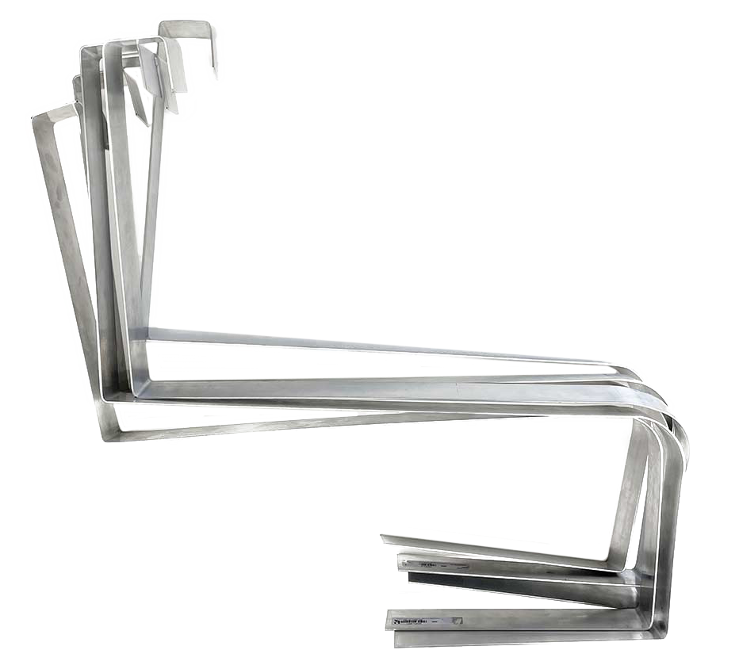

city vs citizens
interventions,
vienna 2023.
The structures provided by the city play a decisive role in “who” and “for what” the space can be used. Certain actions are enabled and others prevented. These boundaries were the starting point for this semester project in partnership with Gala Kuckhoff.
Taking Vienna as an example, “City vs Citizens” was triggered by our privilege: how does access to private space affect how we experience public space? As an exercise, we tried to be more intentional while walking in the city and notice what it is being said to us through Design.
As a product of that exercise and research about the topic of Hostil Design, we selected spaces that felt restrictive or uncomfortable. Their design was put in question in an exaggerated or partly ironic way. The project, that can be seen in better detail in this document, consists of five interventions in public space, where we used the same exact strategies that were used to create the boundaries in the first place: modifying, adding up or removing.
Execution with Gala Kuckhoff.

1/5 _ Christian-Broda-Platz, 1060 Wien
The sitting area formed by these chairs felt inadequate for both strangers and friends. Facing someone so directly, but simultaneously not being able to interact closely was inhibiting us, and (as far as we could observe) most people, from using the space.
After removing (and taking) the screws and playing with the distance of the chairs, we left them facing the opposite direction. Shortly after, the chairs were used and left in different organic arrangements, which suggested a previous wish for control over the layout of this sitting area. During the following weeks, we kept track of the settings created by people using the chairs until they were screwed back in by the city.

2/5 _ Doktor-Karl-Lueger-Platz, 1010 Wien
By adding extra armrests, the overall appearance of the bench was exaggerated. By reducing the size of the seat, new possibilities for movement were created.
“Wide armrests cut through the seat. No one can lie down here, not to mention sleep. Leaning against each other is not possible, the bag has to go on the lap. So what is it for, this bench? The backrests can be an aid for older people to get up. But a bench that plays groups of people off against each other contradicts the goal of public meublage”. (Pühringer, 2023)
3/5_ Lilienbrunngasse, 1020 Wien
By adding a small sign saying “Lilienbrunnen. Throw coin and make a wish”, the concrete structure was “transformed” into a wishing well.
“This “wishing well” was the top topic among Viennese Twitter users last weekend. Justifiably, many questions arise: Why does it look like that? How much did it cost the taxpayer? But is it really a “wishing well”? At first, the City of Vienna didn’t know either. “Um, we’ll ask about it,” they wrote - but: “Just because there’s a sign on it doesn’t automatically mean it’s the City of Vienna”. The head of communications of MA 31 (Vienna Water) writes that it is the pressurised ventilation system for the municipal building next door. And the fountain sign was certainly not stuck on it by the City of Vienna. “Otherwise there would be a festive opening ceremony with district leaders,” jokes one user.” (MeinBezirk, 2022)


4/5 _ Meiselmarkt, 1150 Wien
With this intervention, we tried to not only exaggerate the existing characteristics but also create a visual representation of an idea we had: taking a fence and using it as a ladder.
These two objects can be so similar visually but serve completely opposite purposes. And since our project was based on boundaries, we thought it would be interesting to try using a limit to overcome a limit.
This structure in the middle of a pedestrian street felt ideal to explore this metaphor. We tried to add on to the absurdity of the construction, by creating a third fence.
5/5 _ Praterstern, 1020 Wien
Since the reopening of the Praterstern, the seating stones have sparked a heated debate about their usability. Some see them as hostile to homeless people, others as mere (expensive) decoration, and to play with that, we “packaged” them.
We added a huge net with a price tag that hints at the value of the stones and thus questions the transparency of the cost of new benches.